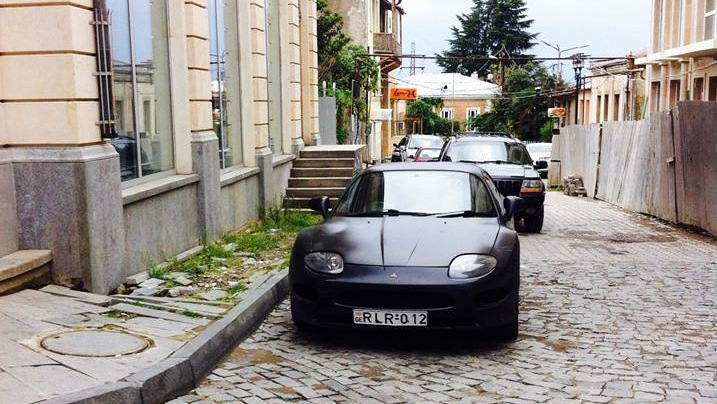
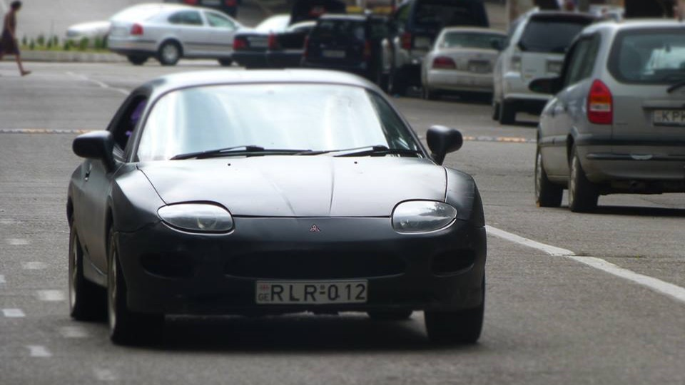

The Mitsubishi FTO is a front engined, front-wheel drive coupe produced by Mitsubishi Motors between 1994 and 2000. It was originally planned to be exclusively for the Japanese domestic market, although its popularity as a grey market import to the United Kingdom, Ireland, Hong Kong, Singapore, Malaysia, Australia and New Zealand led to eventual limited distribution through Mitsubishi's official dealers in those regions at the tail-end of production.[2] Upon its debut it won the Car of the Year Japan award for 1994–95, commemorated by a Limited Edition of the FTO GPX model.[3][circular reference][4] In Japan it was sold at two retail chains called Car Plaza and Galant Shop.
FTO stands for "Fresh Touring Origination".[5] The name recalls the Galant FTO coupé of 1971, one of the company's first sports cars.[6]
Daviti`s mitsubishi fto. Georgia Kutaisi
One of the greatest car in city. In 1994 a whole new FTO coupé concept was created. The only body style was a 2-door coupé, and all FTOs were front wheel drive. Either an inline-four or a transversely mounted V6 engine was available, mated to either a 5-speed manual or the INVECS-II automatic transmission. Earlier (pre-facelift) auto models had a four-speed version, whilst most facelift [1997-2000] auto versions had a five-speed.
The inline-engined GS was the base model in the FTO range, with 14" wheels and automatic climate control. The rear spoiler was only an Option to the Original Equipment on both the GS and the GR. The larger-engined V6 GR also had auto-aircon and 15" wheels. Completing the range was the V6 MIVEC-engined GPX with 16" alloy wheels, sporting a rear spoiler and side air dams as standard. All three of these models gained various refinements prior to the introduction of the facelift versions and many models were purchased fitted with a number of original options that were available, such as ABS, traction control and a passenger air bag. The first appearance of the Mitsubishi-designed INVECS-II automatic "tiptronic-style" transmission, based upon similar Porsche technology,[7][circular reference] was at the launch of this FTO model range. The auto models are, therefore, sometimes referred to as "Tip" or "Tiptronic" FTOs. Driven manually, the box "learns" the driver's style for when motoring in auto mode. The four-speed and five-speed automatic gearboxes use different gear ratios and top speeds differ accordingly.[8]
Do you like my car dear?
I love much Mitsubishi Fto.
If you like my page please contact me:
contact
Kutaisi city
Balakhvani
Mr.Daviti